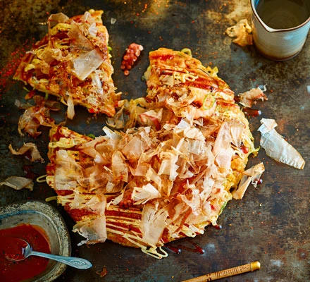

Okonomiyaki
reparation time: 30 mins
Cook: 10 mins
INGREDIENTS
100g plain flour
½ tsp baking powder
1 egg, lightly beaten
2 teaspoons crushed red pepper flakes
100ml cooled fish stock, vegetable, chicken or dashi stock
1 baby potato, peeled and grated
¼ white, pointed or sweetheart cabbage, shredded
1 spring onion, finely sliced
1 tsp soy sauce
1 tsp mirin
vegetable oil, for frying
dried bonito flakes
INSTRUCTIONS
Combine the flour, baking powder, egg and stock. Mix until smooth, whisking out any lumps without overmixing. Add the potato, season with a little salt and white pepper, cover and rest for at least 2 hrs.
While the mix is resting, combine the ingredients for the sauce, stirring until it’s smooth. Set aside.
Remove the batter from the fridge and add the cabbage, spring onion, soy, mirin and chosen seafood. Stir to thoroughly coat the mix in the batter.
Heat a thin layer of oil in a frying pan on a medium heat. Pour the mixture into the pan, keeping it as circular as possible. Fry for 3-5 mins. Use a palette knife to help you flip it over and cook for a further 3-5 mins, using a lid at intervals to trap the heat so it cooks through. Test to see if it’s ready by sticking a chopstick into the middle. If it comes out dry, it’s ready.
Flip onto a board and serve with the sauce and garnishes to taste. Eat straight away.
Main Recipes